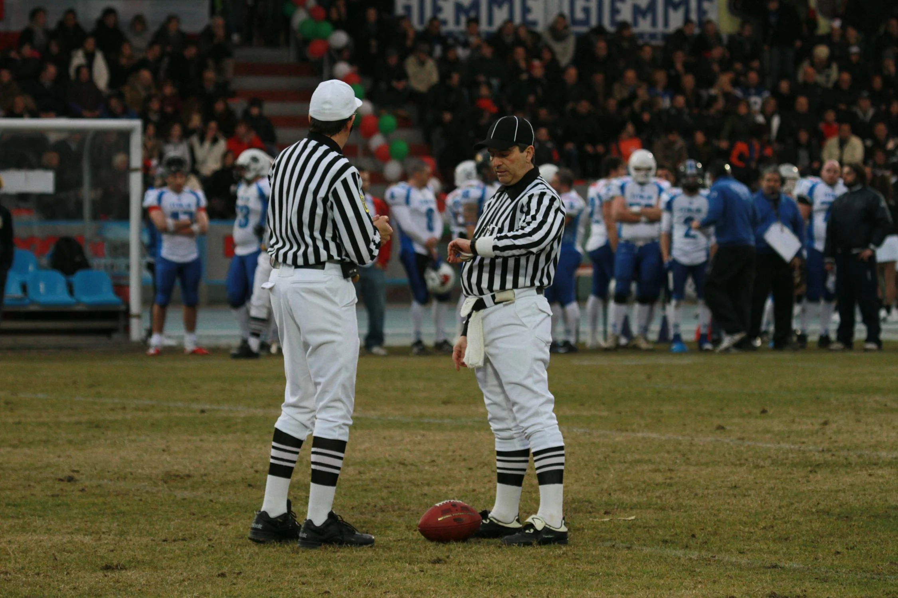

NFL Predictions
View ProjectPredicting NFL game outcomes using various machine learning models and historical game data.

SMS Classification with SVC and Gradio
View ProjectClassifying SMS messages using Support Vector Classification and creating an interactive demo with Gradio.
Neural Network 2, Employee Attrition
View ProjectCleaning and preprocessing data for a neural network model predicting employee attrition.
Neural Network 1, Loan Predictions
View ProjectCleaning and preprocessing data for a neural network model predicting loan defaults.
Classify Cryptocurrencies Price Fluctuations
View ProjectUsing PCA and K-Means modeling to classify cryptocurrencies according to their price fluctuations across various timeframes.

Predicting Future Rises in Popularity of Music Genres
View ProjectInvestigating the rise and fall of the popularity of music genres and predicting future trends using Prophet.